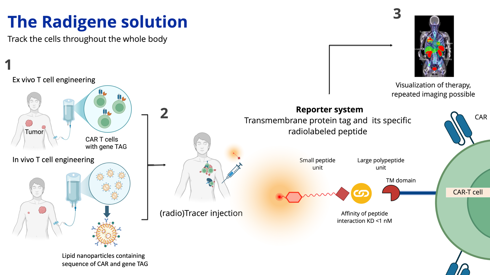

Technology
Track the cells throughout the whole body.
Radigene tags the therapeutic cells with a reporter and images them with a matching radiolabelled tracer.

Three steps
1 · Engineer
Add the gene tag
The tag goes into the cell therapy together with the CAR. It is designed for cells engineered ex vivo, or in vivo with lipid nanoparticles.
2 · Inject
Give the tracer
A radiolabelled peptide is injected. It binds the tag on the cell surface with an affinity below 1 nM.
3 · Image
See the therapy
A scan shows where the engineered cells are in the body. The scan can be repeated.
The reporter system
The reporter system has two parts. The first is a transmembrane protein tag, expressed on the surface of the engineered cell next to the CAR. The second is its specific radiolabelled peptide, which is injected as the tracer. Because the tag sits on the outside of the cell, the tracer can bind it from the bloodstream.
Where the evidence stands
The underlying approach has been shown in mice (Gaspar et al., Int. J. Mol. Sci., 2024). The technology is not used in patients today.
Talk to us about a pilotQuestions and answers
What does Radigene do?
Radigene is building the imaging layer for living medicines. We tag engineered cells, such as CAR-T cells, with a reporter, so that PET and SPECT scans can show where the cells are in the body.
How does it work?
The engineered cell carries a transmembrane protein tag on its surface, next to the CAR. A matching radiolabelled peptide is injected as the tracer and binds the tag. A PET or SPECT scan then shows where the tagged cells are.
Which therapies can it be used with?
It is designed for cell therapies engineered ex vivo, and for cells engineered in vivo with lipid nanoparticles. The tag goes into the therapy together with the CAR.
Does it need a biopsy?
No. The scan covers the whole body and can be repeated.
How is this different from an FDG PET scan?
A metabolic scan such as FDG PET shows both a growing tumour and a wave of activated T cells as hot. A reporter on the engineered cells gives the scan a way to tell them apart. That is what we aim to do.
Does the tracer need a cyclotron?
The tracer is designed around gallium-68, which hospitals can make on site with a generator, without a cyclotron.
Is it used in patients?
No. The underlying approach has been shown in mice (Gaspar et al., Int. J. Mol. Sci., 2024). It is investigational, not used in patients and not a medical device.
Who is behind Radigene?
Radigene B.V. was founded by Laura Mezzanotte (science and operations) and Cas Kranenburg (IP, partnerships and fundraising). We are based in the Leiden area, the Netherlands.
How can I work with Radigene?
If you engineer cells and want to see where they go, or you are an investor, write to hello@radigene.nl. We read every message ourselves.